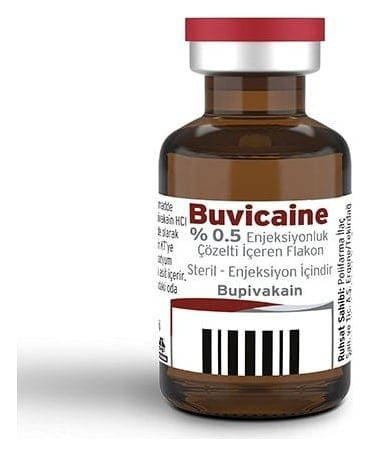

Buvicaine %0.5 Enjeksiyonluk Çözelti İçeren FLAKON,1 Adet

Ne için kullanılır
KT · Bölüm 1• BUVİCAİNE bir adet flakon içeren ambalaj içerisinde kullanıma sunulmaktadır. • BUVİCAİNE bir flakonda 20 mL enjeksiyonluk çözelti içerisinde etkin madde olarak 1 mL’de 5 mg bupivakain hidroklorür içerir. • BUVİCAİNE etkin maddesi bupivakain hidroklorür, lokal anestezikler olarak adlandırılan bir ilaç grubuna dahildir. Bupivakain sinir zarı boyunca sodyum iyonlarının geçirgenliğini engelleyerek sinirlerdeki uyarı iletimini geri dönüşümlü olarak durdurur. Benzer etkiler ayrıca beyin ve kalpte uyarı oluşturan hücrelerin zarlarında da görülebilir. • BUVİCAİNE, vücudunuzun belirli kısımlarını uyuşturmak (anestezi), var olan ağrıyı durdurmak ya da ağrıda hafifleme sağlamak amacıyla kullanılır. • BUVİCAİNE, ameliyat esnasında vücudun belirli kısımlarının uyuşturulması ve doğum esnasında ağrının hafifletilmesi amacıyla kullanılabilmektedir.